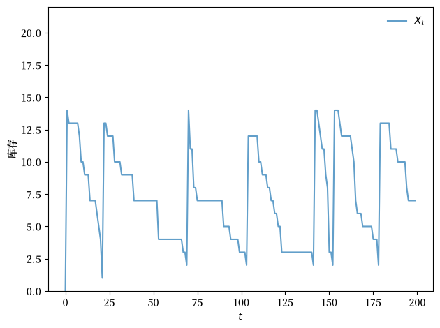
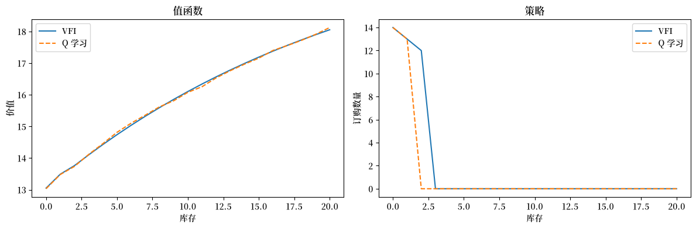
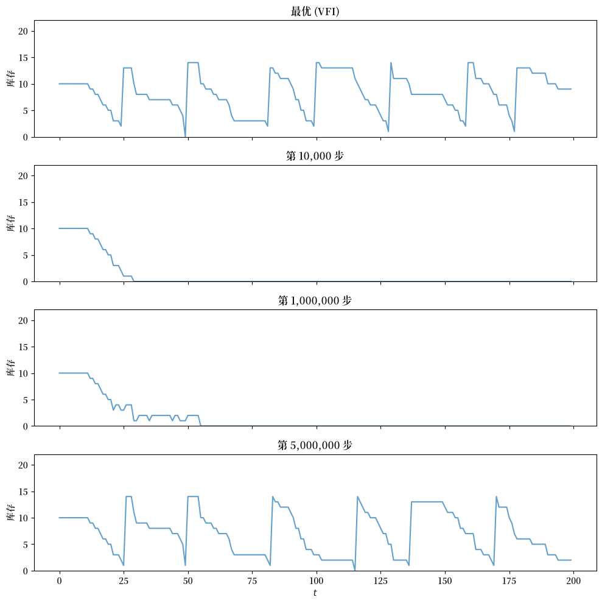

58. 通过 Q 学习进行库存管理#
58.1. 引言#
在本讲座中，我们研究一个经典的库存管理问题。
一家公司必须决定每期订购多少库存，同时面临不确定的需求以及在销售损失与订购成本之间的权衡。
我们用两种方法处理这个问题。
首先，我们假设完全了解模型——需求分布、成本参数以及转移动态——并使用动态规划精确求解它。
其次，我们展示一位经理如何仅凭经验学习最优策略，使用 Q 学习。
在这个设定中，我们假设经理只观察到
库存水平，
下达的订单，
由此产生的利润，以及
下一期的库存水平。
经理知道利率——因此也知道贴现因子——但不知道任何其他底层参数。
一个关键思想是 Q 因子 表示，它重新构造了贝尔曼方程，使得无需了解转移动态即可恢复最优策略。
我们证明，只要有足够的经验，经理学习到的策略会收敛到最优策略。
本讲座的展开如下：
我们设置库存模型，并通过值函数迭代精确求解它。
我们引入 Q 因子并推导 Q 因子贝尔曼方程。
我们实现 Q 学习，并展示学习到的策略收敛到最优策略。
本模型的一个风险敏感扩展在 通过 Q-Learning 进行风险敏感型库存管理 中研究。
我们将使用以下导入：
import numpy as np
import numba
import matplotlib.pyplot as plt
import matplotlib as mpl
FONTPATH = "fonts/SourceHanSerifSC-SemiBold.otf"
mpl.font_manager.fontManager.addfont(FONTPATH)
plt.rcParams['font.family'] = ['Source Han Serif SC']
from typing import NamedTuple
58.2. 模型#
我们研究一家公司，其经理试图通过控制库存来最大化股东价值。
为了简化问题，我们假设该公司只销售一种产品。
设 \(\pi_t\) 为时间 \(t\) 的利润，\(r > 0\) 为利率，则公司的价值为
假设公司面临外生需求过程 \((D_t)_{t \geq 0}\)。
我们假设 \((D_t)_{t \geq 0}\) 是独立同分布的，具有 \(\{0, 1, \ldots\}\) 上的共同分布 \(\phi\)。
产品的库存 \((X_t)_{t \geq 0}\) 服从
项 \(A_t\) 是本期订购的库存单位数，它们在需求 \(D_{t+1}\) 实现并被满足之后，于 \(t+1\) 期初到达：
观察 \(X_t\) → 选择 \(A_t\) → 需求 \(D_{t+1}\) 到达 → 利润实现 → \(X_{t+1}\) 确定。
（我们在 \(A_t\) 中使用 \(t\) 下标以表明信息集：它是在观察到 \(D_{t+1}\) 之前选择的。）
我们假设公司一次最多可以存储 \(K\) 件物品。
利润由下式给出
这里
销售价格设为一（为方便起见）
收入是当前库存与需求的最小值，因为超出库存的订单会损失（不会补货）
\(c\) 是单位产品成本，\(\kappa\) 是订购库存的固定成本
我们可以将库存问题映射到一个动态规划问题，其状态空间为 \(\mathsf X := \{0, \ldots, K\}\)，动作空间为 \(\mathsf A := \mathsf X\)。
可行对应关系 \(\Gamma\) 为
这表示当前库存状态为 \(x\) 时的可行订单集合。
贝尔曼方程的形式为
这里 \(D\) 是一个分布为 \(\phi\) 的随机变量。
58.3. 通过值函数迭代求解#
让我们从经理知道所有参数、函数形式和分布的设定开始。
她使用值函数迭代（VFI）以数值方式求解模型。
其思想是对由下式定义的贝尔曼算子 \(T\) 进行迭代
从初始猜测 \(v_0\) 开始。
然后，取该迭代过程的输出 \(v\)，我们计算一个 \(v\)-贪婪策略 \(\sigma\)，它满足
当 \(r > 0\)（等价地，\(\beta < 1\)）时，序列 \(v_{k+1} = T v_k\) 收敛到唯一的不动点 \(v^*\)，它就是最优策略的值函数（例如，参见 [Sargent and Stachurski, 2025]）。
58.3.1. 模型设定#
我们将模型基本要素存储在一个 NamedTuple 中。
需求服从参数为 \(p\) 的几何分布，因此对于 \(d = 0, 1, 2, \ldots\)，\(\phi(d) = (1 - p)^d \, p\)。
class Model(NamedTuple):
x_values: np.ndarray # 库存值
d_values: np.ndarray # 用于求和的需求值
ϕ_values: np.ndarray # 需求概率
p: float # 需求参数
c: float # 单位成本
κ: float # 固定成本
β: float # 贴现因子
下面的函数使用默认参数构造一个 Model 实例。
出于计算目的，我们在 D_MAX 处截断需求分布。
def create_sdd_inventory_model(
K: int = 20, # 最大库存
D_MAX: int = 21, # 用于求和的需求上界
p: float = 0.7,
c: float = 0.2,
κ: float = 0.8,
β: float = 0.98
) -> Model:
def demand_pdf(p, d):
return (1 - p)**d * p
d_values = np.arange(D_MAX)
ϕ_values = demand_pdf(p, d_values) # ϕ_0, ϕ_1,...
x_values = np.arange(K + 1) # 0, 1, ..., K
return Model(x_values, d_values, ϕ_values, p, c, κ, β)
58.3.2. 贝尔曼算子#
核心计算是贝尔曼算子 \(T\)。
对于每个库存水平 \(x\)，我们遍历所有可行的订购数量 \(a \in \{0, \ldots, K - x\}\)，并计算期望值
然后我们对 \(a\) 取最大值。
内层循环用 Numba 编译以提升性能。
@numba.jit(nopython=True)
def T_kernel(v, d_values, ϕ_values, c, κ, β, K):
new_v = np.empty(K + 1)
for x in range(K + 1):
best = -np.inf
for a in range(K - x + 1): # 遍历可行动作
val = 0.0
for i in range(len(d_values)): # 计算关于需求的期望
d = d_values[i]
x_next = max(x - d, 0) + a
revenue = min(x, d)
cost = c * a + κ * (a > 0)
val += ϕ_values[i] * (revenue - cost + β * v[x_next])
if val > best:
best = val
new_v[x] = best
return new_v
包装函数 T 解包模型并调用已编译的内核。
def T(v, model):
"""贝尔曼算子。"""
x_values, d_values, ϕ_values, p, c, κ, β = model
K = len(x_values) - 1
return T_kernel(v, d_values, ϕ_values, c, κ, β, K)
58.3.3. 计算贪婪策略#
回想一下，给定值函数 \(v\)，\(v\)-贪婪策略 通过下式计算
其结构与贝尔曼算子相同，只是我们记录的是最大化动作而非最大化的值。
@numba.jit(nopython=True)
def get_greedy_kernel(v, d_values, ϕ_values, c, κ, β, K):
σ = np.empty(K + 1, dtype=np.int32)
for x in range(K + 1):
best = -np.inf
best_a = 0
for a in range(K - x + 1):
val = 0.0
for i in range(len(d_values)):
d = d_values[i]
x_next = max(x - d, 0) + a
revenue = min(x, d)
cost = c * a + κ * (a > 0)
val += ϕ_values[i] * (revenue - cost + β * v[x_next])
if val > best:
best = val
best_a = a
σ[x] = best_a
return σ
def get_greedy(v, model):
"""获取一个 v-贪婪策略。"""
x_values, d_values, ϕ_values, p, c, κ, β = model
K = len(x_values) - 1
return get_greedy_kernel(v, d_values, ϕ_values, c, κ, β, K)
58.3.4. 值函数迭代#
我们从 \(v_0 = 0\) 开始迭代 \(v_{k+1} = T v_k\) 直到收敛。
一旦值函数收敛（达到容差 tol 之内），我们通过 get_greedy 提取最优策略 \(\sigma^*\)。
def solve_inventory_model(v_init, model, max_iter=10_000, tol=1e-6):
v = v_init.copy()
i, error = 0, tol + 1
while i < max_iter and error > tol:
new_v = T(v, model)
error = np.max(np.abs(new_v - v))
i += 1
v = new_v
print(f"Converged in {i} iterations with error {error:.2e}")
σ = get_greedy(v, model)
return v, σ
58.3.5. 创建并求解一个实例#
model = create_sdd_inventory_model()
x_values, d_values, ϕ_values, p, c, κ, β = model
n_x = len(x_values)
v_init = np.zeros(n_x)
v_star, σ_star = solve_inventory_model(v_init, model)
Converged in 623 iterations with error 9.95e-07
58.3.6. 模拟最优策略#
为了可视化解，我们在最优策略 \(\sigma^*\) 下模拟库存过程。
在每一步，我们从几何分布中抽取一个需求冲击，并通过 \(h\) 更新状态。
@numba.jit(nopython=True)
def sim_inventories(ts_length, σ, p, X_init=0, seed=0):
"""在策略 σ 下模拟库存动态。"""
np.random.seed(seed)
X = np.zeros(ts_length, dtype=np.int32)
X[0] = X_init
for t in range(ts_length - 1):
d = np.random.geometric(p) - 1
X[t+1] = max(X[t] - d, 0) + σ[X[t]]
return X
下面的图展示了在最优策略下的一条典型库存路径。
注意 S-s 模式：当库存降到较低水平时，公司下达一个大订单来补充库存（向上的跳跃），此后随着需求被满足，库存逐渐下降。
def plot_ts(ts_length=200, fontsize=10):
X = sim_inventories(ts_length, σ_star, p)
fig, ax = plt.subplots()
ax.plot(X, label=r"$X_t$", alpha=0.7)
ax.set_xlabel(r"$t$", fontsize=fontsize)
ax.set_ylabel("库存", fontsize=fontsize)
ax.legend(fontsize=fontsize, frameon=False)
ax.set_ylim(0, len(σ_star) + 1)
plt.tight_layout()
plt.show()
plot_ts()
findfont: Failed to find font weight normal, now using 600.
findfont: Failed to find font weight normal, now using 600.

58.4. Q 学习#
现在我们要问：一个智能体能否在不知道模型的情况下学习最优策略？
特别地，假设智能体不知道需求分布 \(\phi\)、成本参数 \(c\) 和 \(\kappa\)，或转移函数 \(h\)。
相反，智能体只在与环境交互时观察到状态、动作和利润的序列。
58.4.1. Q 因子贝尔曼方程#
Q 学习的第一步是修改贝尔曼方程，将其转化为一种能够从这些有限信息中学习的形式。
我们不再使用值函数 \(v(x)\)，而是使用 Q 函数（或 Q 因子）\(q(x, a)\)。
我们用值函数 \(v^*\) 来定义 \(q\)，如下
换句话说，\(q(x, a)\) 是在状态 \(x\) 中采取动作 \(a\)、此后遵循最优策略的期望值。
注意贝尔曼方程 (58.1) 可以写为
将其代回 \(q\) 的定义中，我们可以消去 \(v^*\)，得到一个仅关于 \(q\) 的不动点方程：
其中 \(x' = h(x, a, D)\)。
使用 \(q\) 的一个优势是，最优策略可以直接读取为 \(\sigma(x) = \arg\max_a q(x, a)\)，而无需知道转移函数。
58.4.2. Q 学习更新规则#
Q 学习使用 随机逼近 来逼近 Q 因子贝尔曼方程的不动点。
在每一步，智能体处于状态 \(x\)，采取动作 \(a\)，观察到奖励 \(R_{t+1} = \pi(x, a, D_{t+1})\) 和下一状态 \(X_{t+1} = h(x, a, D_{t+1})\)，并更新
其中 \(\alpha_t\) 是学习率。
该更新将当前估计 \(q_t(x, a)\) 与贝尔曼目标的一个新样本混合。
58.4.3. 经理需要知道什么#
注意实现该更新不需要什么。
经理不需要知道需求分布 \(\phi\)、单位成本 \(c\)、固定成本 \(\kappa\) 或转移函数 \(h\)。
经理在每一步只需观察：
当前库存水平 \(x\)，
订购数量 \(a\)（由他们选择），
由此产生的利润 \(R_{t+1}\)（记在账簿上），
贴现因子 \(\beta\)（由利率决定），以及
下一期库存水平 \(X_{t+1}\)（他们可以从仓库读取）。
这些都是可直接观察的量——无需模型知识。
58.4.4. Q 表和最大值的作用#
理解更新规则如何与经理的动作相关联很重要。
经理维护一个 Q 表——一个查找表，为每个状态-动作对 \((x, a)\) 存储一个估计 \(q_t(x, a)\)。
在每一步，经理处于某个状态 \(x\)，必须选择一个具体动作 \(a\) 来采取。无论选择哪个 \(a\)，经理都会观察到利润 \(R_{t+1}\) 和下一状态 \(X_{t+1}\)，并使用上述规则更新表中的那一个条目 \(q_t(x, a)\)。
人们很容易把更新规则中的 \(\max_{a'}\) 理解为规定经理的下一个动作——即把这个更新解读为”移动到状态 \(X_{t+1}\) 并采取 \(\argmax_{a'} q_t(X_{t+1}, a')\) 中的一个动作”。
但 \(\max\) 起的是不同的作用。
量 \(\max_{a' \in \Gamma(X_{t+1})} q_t(X_{t+1}, a')\) 只是在最佳可能延续下处于状态 \(X_{t+1}\) 的价值的估计。
这个标量作为 \(q_t(x, a)\) 的目标值的一部分进入更新。
经理在时间 $t+1 实际采取 哪个动作是一个单独的决策。
简而言之，\(\max\) 起的是寻找最优的作用；它并不规定经理实际采取的动作。
58.4.5. 行为策略#
支配经理如何选择动作的规则称为行为策略。
因为更新目标中的 \(\max\) 总是指向 \(q^*\)，无论经理如何选择动作，行为策略只影响哪些 \((x, a)\) 条目随时间被访问——从而被更新。
在强化学习文献中，这个性质称为离策略（off-policy）学习：收敛目标（\(q^*\)）不依赖于行为策略。
只要每个 \((x, a)\) 对被无限次访问（这样 Q 表的每个条目都会收到无限多次更新），并且学习率满足标准条件（见下文），Q 表就会收敛到 \(q^*\)。
行为策略影响收敛的速度——更频繁地访问重要的状态-动作对会带来更快的学习——但不影响极限。
在实践中，我们希望经理大多数时候采取好的动作（在学习的同时赚取合理的利润），同时仍偶尔进行实验以发现更好的替代方案。
58.4.6. 学习率#
我们使用 \(\alpha_t = 1 / n_t(x, a)^{0.51}\)，其中 \(n_t(x, a)\) 是到时间 \(t\) 为止对 \((x, a)\) 对访问的次数。
它衰减得足够慢，允许从后期（信息更充分）的更新中学习，同时仍满足收敛的 Robbins–Monro 条件。
58.4.7. 探索：epsilon-贪婪#
对于我们的行为策略，我们使用 \(\varepsilon\)-贪婪策略：
以概率 \(\varepsilon\)，选择一个随机的可行动作（探索）。
以概率 \(1 - \varepsilon\)，选择当前 \(q\)-值最高的动作（利用）。
探索确保每个状态-动作对都被访问，这是收敛所需要的。
利用确保经理在学习的同时赚取合理的利润。
我们每一步都衰减 \(\varepsilon\)：\(\varepsilon_{t+1} = \max(\varepsilon_{\min},\; \varepsilon_t \cdot \lambda)\)，因此经理在早期广泛实验，并随着经验的积累越来越依赖学习到的 \(q\)-值。
随机需求冲击自然地驱使经理经历不同的库存水平，从而在无需任何人为重置的情况下对状态空间进行探索。
58.4.8. 乐观初始化#
一个简单但强大的加速学习技术是乐观初始化：我们不从零开始初始化 Q 表，而是将每个条目初始化为高于真实最优值的值。
因为每个未尝试过的动作看起来都乐观地好，所以每当智能体尝试一个动作时都会”失望”——更新会将该条目向现实拉低。这促使智能体尝试其他动作（它们仍然看起来乐观地高），从而在训练早期产生对状态-动作空间的广泛探索。
这个思想有时被称为面对不确定性时的乐观主义，在老虎机和强化学习环境中都被广泛使用。
在我们的问题中，值函数 \(v^*\) 的范围约为 13 到 18。我们将 Q 表初始化为 20——略高于真实最大值——以确保乐观探索，同时不至于极端到扭曲学习。
58.4.9. 实现#
我们首先定义一个辅助函数，用于从 Q 表中提取贪婪策略。
@numba.jit(nopython=True)
def greedy_policy_from_q(q, K):
"""从 Q 表中提取贪婪策略。"""
σ = np.empty(K + 1, dtype=np.int32)
for x in range(K + 1):
best_val = -np.inf
best_a = 0
for a in range(K - x + 1):
if q[x, a] > best_val:
best_val = q[x, a]
best_a = a
σ[x] = best_a
return σ
Q 学习循环在一条连续的轨迹中运行总共 n_steps 步——正如一位真实的经理会从持续不断的数据流中学习一样。
在指定的步数（由 snapshot_steps 给出）处，我们记录当前的贪婪策略。
@numba.jit(nopython=True)
def q_learning_kernel(K, p, c, κ, β, n_steps, X_init,
ε_init, ε_min, ε_decay, q_init, snapshot_steps, seed):
np.random.seed(seed)
q = np.full((K + 1, K + 1), q_init)
n = np.zeros((K + 1, K + 1)) # 用于学习率的访问计数
ε = ε_init
n_snaps = len(snapshot_steps)
snapshots = np.zeros((n_snaps, K + 1), dtype=np.int32)
snap_idx = 0
# 初始化状态和动作
x = X_init
a = np.random.randint(0, K - x + 1)
for t in range(n_steps):
# 如需要则记录策略快照
if snap_idx < n_snaps and t == snapshot_steps[snap_idx]:
snapshots[snap_idx] = greedy_policy_from_q(q, K)
snap_idx += 1
# === 抽取 D_{t+1} 并观察结果 ===
d = np.random.geometric(p) - 1
reward = min(x, d) - c * a - κ * (a > 0)
x_next = max(x - d, 0) + a
# === 对下一状态取最大值（用于更新目标的标量值）===
# 同时记录 argmax 动作供行为策略使用。
best_next = -np.inf
a_next = 0
for aa in range(K - x_next + 1):
if q[x_next, aa] > best_next:
best_next = q[x_next, aa]
a_next = aa
# === Q 学习更新（使用 best_next，即最大值）===
n[x, a] += 1
α = 1.0 / n[x, a] ** 0.51
q[x, a] = (1 - α) * q[x, a] + α * (reward + β * best_next)
# === 行为策略：ε-贪婪（使用 a_next，即 argmax 动作）===
x = x_next
if np.random.random() < ε:
a = np.random.randint(0, K - x + 1)
else:
a = a_next
ε = max(ε_min, ε * ε_decay)
return q, snapshots
包装函数解包模型并提供默认超参数。
def q_learning(model, n_steps=20_000_000, X_init=0,
ε_init=1.0, ε_min=0.01, ε_decay=0.999999,
q_init=20.0, snapshot_steps=None, seed=1234):
x_values, d_values, ϕ_values, p, c, κ, β = model
K = len(x_values) - 1
if snapshot_steps is None:
snapshot_steps = np.array([], dtype=np.int64)
return q_learning_kernel(K, p, c, κ, β, n_steps, X_init,
ε_init, ε_min, ε_decay, q_init, snapshot_steps, seed)
接下来我们运行 \(n\) = 500 万步，并在第 10,000 步、第 1,000,000 步和第 \(n\) 步处拍摄策略快照。
n = 5_000_000
snap_steps = np.array([10_000, 1_000_000, n], dtype=np.int64)
q, snapshots = q_learning(model, n_steps=n+1, snapshot_steps=snap_steps)
58.4.10. 与精确解比较#
我们通过下式从最终的 Q 表中提取值函数和策略
并将它们与 VFI 得到的 \(v^*\) 和 \(\sigma^*\) 进行比较。
K = len(x_values) - 1
# 限制在可行动作 a ∈ {0, ..., K-x}
v_q = np.array([np.max(q[x, :K - x + 1]) for x in range(K + 1)])
σ_q = np.array([np.argmax(q[x, :K - x + 1]) for x in range(K + 1)])
fig, axes = plt.subplots(1, 2, figsize=(12, 4))
axes[0].plot(x_values, v_star, label="VFI")
axes[0].plot(x_values, v_q, '--', label="Q 学习")
axes[0].set_xlabel("库存")
axes[0].set_ylabel("价值")
axes[0].legend()
axes[0].set_title("值函数")
axes[1].plot(x_values, σ_star, label="VFI")
axes[1].plot(x_values, σ_q, '--', label="Q 学习")
axes[1].set_xlabel("库存")
axes[1].set_ylabel("订购数量")
axes[1].legend()
axes[1].set_title("策略")
plt.tight_layout()
plt.show()
findfont: Failed to find font weight normal, now using 600.

58.4.11. 可视化随时间的学习#
下面的面板展示了智能体的行为在训练过程中如何演变。
每个面板使用从给定训练步骤的 Q 表中提取的贪婪策略来模拟一条库存路径。
所有面板使用相同的需求序列（通过固定的随机种子），因此差异仅反映策略的变化。
顶部面板展示了 VFI 得到的最优策略作为参考。
在 10,000 步后，智能体几乎没有探索，其策略很差。
到 1,000,000 步时，策略已有所改进，但仍与最优策略有明显差异。
到第 500 万步时，学习到的策略产生的库存动态与最优解的 S-s 模式非常相似。
ts_length = 200
n_snaps = len(snap_steps)
fig, axes = plt.subplots(n_snaps + 1, 1, figsize=(10, 2.5 * (n_snaps + 1)),
sharex=True)
X_init = K // 2
sim_seed = 5678
# 最优策略
X_opt = sim_inventories(ts_length, σ_star, p, X_init, seed=sim_seed)
axes[0].plot(X_opt, alpha=0.7)
axes[0].set_ylabel("库存")
axes[0].set_title("最优 (VFI)")
axes[0].set_ylim(0, K + 2)
# Q 学习快照
for i in range(n_snaps):
σ_snap = snapshots[i]
X = sim_inventories(ts_length, σ_snap, p, X_init, seed=sim_seed)
axes[i + 1].plot(X, alpha=0.7)
axes[i + 1].set_ylabel("库存")
axes[i + 1].set_title(f"第 {snap_steps[i]:,} 步")
axes[i + 1].set_ylim(0, K + 2)
axes[-1].set_xlabel(r"$t$")
plt.tight_layout()
plt.show()
